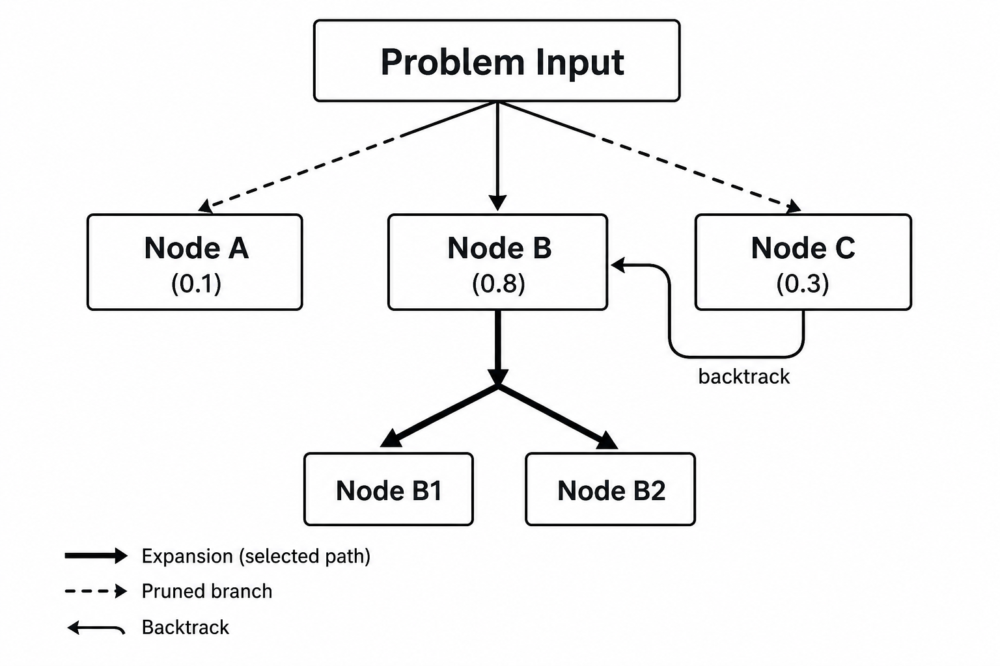

Remark
These lecture notes are in early access and will continue to evolve based on classroom experience and feedback.
6.3.4. Reasoning with Generative Models#
6.3.4.1. Learning objectives#
By the end of this section, you should be able to:
Explain why standard prompting fails on multi-step reasoning problems and how Chain-of-Thought addresses this.
Implement few-shot Chain-of-Thought (CoT) prompting by providing worked-example reasoning traces.
Apply zero-shot CoT using the “Let’s think step by step” trigger and explain why it works.
Implement self-consistency decoding and explain how majority voting over multiple reasoning paths improves reliability.
Apply tree-of-thought prompting for problems that require exploring multiple solution strategies.
Before we continue, let’s load back the pip from Section 6.3.1
Device set to use cuda
6.3.4.2. Why Standard Prompting Fails on Reasoning Tasks#
When presented with multi-step arithmetic, symbolic logic, or complex planning problems, large language models frequently generate incorrect answers if prompted directly. Standard prompting asks the model to transition immediately from the problem statement to the final conclusion:
The root cause of this failure lies in the mechanics of autoregressive next-token prediction. An LLM calculates the probability distribution of the next token based entirely on the static context window preceding it.
When a model is forced to output the final answer immediately, it must compute the tokens for that answer (e.g., a specific numerical value) conditioned only on the tokens of the question. For a complex, multi-step problem, the computational track required to bridge the question to the answer is too deep to resolve in a single forward token pass.
Without generating intermediate states, the model cannot allocate attention weights to sub-calculations. It is essentially forced to “guess” the final token based on superficial statistical associations found in its training data.
6.3.4.3. Chain-of-Thought (CoT) Prompting#
Chain-of-Thought (CoT) prompting [Wei et al., 2022] fundamentally alters this execution path. Instead of navigating directly from input to final answer, the model is directed to produce an explicit sequence of intermediate, interpretable reasoning steps:
6.3.4.3.1. The Autoregressive Advantage of a Reasoning Trace#
When a model writes out its calculations step by step, each completed sub-step is appended directly back into its own context window.
To calculate Step 3, the model’s self-attention mechanism can actively weight and reference the computed outputs of Step 1 and Step 2.
This effectively converts a high-degree reasoning problem into a series of simpler, linear next-token tasks. It provides the neural network with a “scratchpad” to distribute its computational budget dynamically across the generation lifecycle.
6.3.4.4. Chain-of-Thought: Worked Example in the Prompt (Few-Shot CoT)#
The most direct way to activate this behavior is through Few-Shot CoT. By providing an input-output exemplar within the prompt where the answer role explicitly showcases a step-by-step logical breakdown, the model mimics this cognitive strategy for subsequent queries.
Let's break down the problem into steps.
1. The cafeteria starts with 23 apples.
2. They use 20 apples to make lunch: 23 - 20 = 3 apples remaining.
3. They buy 6 more apples: 3 + 6 = 9 apples.
The cafeteria has 9 apples after these actions.
6.3.4.4.1. Deconstructing the Executed Trace#
When Phi-3 processes this payload, the structural sequence in the exemplar acts as a behavioral anchor. Rather than mapping the token “apples” straight to a generic integer value, the model follows the numerical sequence structure established in the prompt’s context window. It isolates the initial inventory, subtracts the usage tier, adds the procurement tier, and naturally isolates the correct final total.
6.3.4.5. Zero-Shot Chain-of-Thought#
Providing explicit, hand-crafted exemplars is highly effective, but compiling them requires substantial manual effort and burns through your token budget. Zero-Shot CoT [Kojima et al., 2022] achieves remarkably similar logical benefits simply by appending a targeted trigger phrase directly to the user’s question.
To determine how long it will take to ride 90 km at the same speed, we first need to calculate the cyclist's speed during the initial 45 km ride. We can do this by dividing the distance traveled by the time taken.
Speed = Distance / Time
Speed = 45 km / 3 hours
Speed = 15 km/hour
Now that we know the cyclist's speed is 15 km/hour, we can use this information to find out how long it will take to ride 90 km.
Time = Distance / Speed
Time = 90 km / 15 km/hour
Time = 6 hours
So, it will take the cyclist 6 hours to ride 90 km at the same speed.
6.3.4.5.1. Why a Simple Phrase Alters Network Behavior#
The phrase “Let’s think step by step” acts as a semantic trigger inside instruction-tuned models. Because a massive portion of web tutorials, mathematical proofs, and high-quality instruction datasets feature this exact phrasing right before a logical breakdown, the token sequence heavily biases the model’s next-token probabilities.
Instead of jumping straight to an arbitrary final guess, the network shifts into an explanatory mode, generating intermediate mathematical milestones.
6.3.4.5.1.1. Other Effective Zero-Shot Triggers#
Depending on your specific domain, swapping the trigger phrase can subtly reshape how the model distributes its attention:
For Code & Engineering:
"Let's work through this carefully, showing each intermediate state."For Complex Planning:
"Think through the prerequisites step-by-step before determining the final answer."For Guarded Extractions:
"Show your internal reasoning logic first, then provide the final output line."
6.3.4.6. Self-Consistency: Majority Voting Over Reasoning Paths#
While Chain-of-Thought paths drastically improve accuracy, a model can still make a minor calculation mistake early in a reasoning trace. Because text generation is autoregressive, that single early error cascades, leading the model to arrive at an incorrect final conclusion with high confidence.
Self-consistency [Wang et al., 2023] addresses this fragility by applying a parallel voting ensemble. Instead of generating a single deterministic response via greedy decoding, the system samples a varied population of independent reasoning paths using a higher temperature. It then extracts the final answer from each path and selects the most frequent output via a majority vote.
Voting Pool Distribution: {'So, the factory produces 4,800 units in 4 weeks.': 1, 'So, the factory produces 4800 units in 4 weeks.': 4}
Final Consensus Answer: So, the factory produces 4800 units in 4 weeks.
6.3.4.6.1. The Engineering Rationale Behind Self-Consistency#
Self-consistency works because for any complex logic or math puzzle, there are many different valid ways to think about and solve the problem correctly, but only a few ways to accidentally arrive at the exact same wrong number.
By allowing the model to explore multiple distinct reasoning paths, incorrect assumptions naturally end up scattered across different wrong answers in the minority tail. Meanwhile, the correct paths consistently converge on the exact same final value, establishing a highly resilient consensus.
6.3.4.7. Tree-of-Thought: Multiple Expert Perspectives#
For complex problems where the solution space branches significantly—and where an early incorrect assumption can derail an entire linear calculation—standard Chain-of-Thought often fails. While CoT commits down a single linear path, Tree-of-Thought (ToT) [Yao et al., 2023] allows language models to deliberate by exploring multiple discrete reasoning paths, evaluating progress at each branch, and backtracking when a dead end is reached.
{kind=link}

Fig. 6.1 The Tree-of-Thought (ToT) architecture, illustrating branching paths (Node A, B, C), heuristic state evaluations, and targeted exploration down the highest-scoring path (Node B).#
6.3.4.7.1. The Architectural Blueprint of ToT#
To implement a Tree-of-Thought framework, the task is split into a multi-agent or multi-prompt pipeline that handles three primary computational steps:
Thought Generation (Branching): Instead of generating a full answer, the model is prompted to propose 3–4 distinct next steps or initial strategies to solve the problem.
State Evaluation (Heuristics): A secondary prompt acts as an evaluator or “judge,” scoring each proposed step (e.g., “Feasible”, “Infeasible”, or assigning a scalar value from \(1\) to \(5\)) based on its logical viability.
Search Algorithmic Control: A programmatic wrapper (using search algorithms like Breadth-First Search (BFS) or Depth-First Search (DFS)) navigates the tree. If an evaluation step returns a low score, the system abandons that branch, backtracks to the parent node, and selects the next highest-scoring path.
6.3.4.7.2. Strategic Trade-Offs: Choosing Your Reasoning Framework#
When engineering reasoning applications, select your cognitive design pattern based on the complexity of your problem space versus your compute budget:
Framework |
Execution Profile |
Optimal Use Case |
Compute Cost |
|---|---|---|---|
Standard CoT |
Linear Path: Single generation with explicit intermediate steps. |
Deterministic arithmetic, straightforward logic puzzles, step-by-step documentation. |
Low: \(1\times\) execution pass. |
Self-Consistency |
Parallel Paths: Multiple independent traces with a majority vote. |
High-stakes math queries, closed-ended classification tasks with a definitive final answer. |
Medium: \(N\times\) parallel sampling calls. |
Tree-of-Thought |
Branching Tree: Generates, evaluates, and backtracks across states. |
Open-ended planning, complex coding refactors, creative writing architectural design. |
High: Multi-turn recursive API requests. |
6.3.4.8. Exercises and discussion#
CoT vs. direct comparison Select 10 multi-step arithmetic problems. Run each with (a) a direct answer prompt, (b) zero-shot CoT (“Let’s think step by step”), and (c) few-shot CoT with one worked example. Count correct answers in each condition. What is the improvement from direct → zero-shot CoT → few-shot CoT?
Self-consistency calibration Implement self-consistency with n = 1, 3, 5, 10 samples on a set of 20 reasoning problems. Plot accuracy as a function of n. At what value of n does improvement plateau? What is the accuracy cost of using n=1 vs. n=5?
Tree-of-thought decomposition Write a tree-of-thought prompt for a planning problem of your choice (e.g., scheduling, route optimization, or a logic puzzle). Does the model generate genuinely different strategies in each expert branch, or do the branches converge quickly? What does this reveal about the model’s diversity of reasoning?